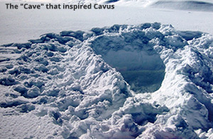
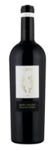

Cavus is a family run vineyard nestled in the hillside of the Stag’s Leap appellation in Napa Valley. Our first release was the 2004 Cabernet Sauvignon.
Cavus, The Cave is a personal tribute to friends, good fortune and life. Darryl and two friends were skiing in Argentina when they took a wrong turn and found themselves on the backside of the mountain with no way out. They built “a cave” and the three friends settled in for the night not knowing what the future would bring. As good fortune would have it they were rescued 24 hours later, tired, thankful and full of joy.
The experience reinforced our philosophy on drinking good wine: why wait for a “special occasion”? Celebrate life each day and always drink good wine.
The 2023 Napa vintage is being widely hailed as exceptional, with many predicting it to be one of the best in recent history.
We are proud to share that one of the most renowned winemakers in the Napa Valley, Julien Fayard, is behind our first vintage from the new vineyard.
Pre-orders open September 17th Release/shipping anticipated to be November 2025